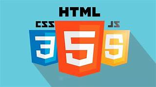
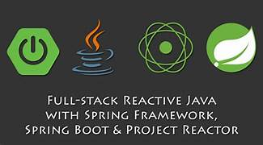

Welcome to Tech World!
Welcome to Tech World!

Explore the amzing world of technology & innovation! © 2025 Tech
World ®

Master HTML, CSS, JavaScript, and ReactJs to create stunning. responsive
user interfaces under the expert guidance of Ratan Sir. Build real-time
projects and elevate your frontend development skills!

Learn Spring, Spring Boot, and Microservies under the guidance of Ratan
Sir and build a real-time project !
My Project Links:
- React Project- E-commerce
- MVC Product Management
- REST Employee Management
- Microservices-Based Application
♥ Thank you for visiting! Stay connected with us! ☎
+123-456-7890
About Sathya Tech ®
Satya Technologies is a premier training institute known for delivering
high-quality IT education and career-focused courses. With a strong
presence in Hyderabad, Satya Technologies offers professional training in
areas like Java, Python, .NET, Data Science, AWS, and more. The institute
is committed to bridging the gap between academic learning and industry
requirements through expert trainers, real-time project exposure, and
placement support. Whether you’re a student or working professional, Satya
Technologies provides flexible learning options to help you grow in
today’s competitive tech world.🏠